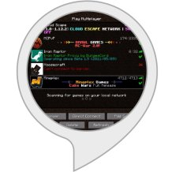

Looking 
Features
- Specify a server type you want to play on or simply say random to get any server.
- Short descriptions are allowed so owners can describe their server.
- Other server tags will be read to see if the server fits your preferences.
- Server address is read and spelled to try to eliminate confusion.
- Server is queried if server owner provides a port for it and players online are read.
- Say “next server” to find another server with the same tag.
- Say “add favorite server” to add a server as your favorite so you can check on its status easily.
- Update command to update the list of servers from the Google form response spreadsheet.
- Check on Mojang services by saying “mojang” at any prompt.
- Check on the random daily featured server.
Example Commands (start with “Alexa, ask server list…”)
- tell me a survival server
- give me a pvp server
- for a prison server
- server with ranks
- skyblock
- update server list
- check favorite server
- check featured server
Commands after server read.
- repeat
- next server
- check favorite
FAQ
How do I add my server to the list?
Visit http://serverlist.ironraptor.com and fill out the form to add your server. You can visit it again to update or make changes as needed.
How long until my server is used in a response?
When you add your server you can tell server list to update server list. If it’s been more than an hour since the last update it’ll grab the new servers. If it hasn’t been a full hour you can either wait the remaining time and try again, or just wait until someone else issues the command later.
I don’t understand the server address that is being read back.
If you can’t understand Alexa’s pronunciation of the server address, check your alexa app on your phone to see what the response is and you’ll be able to read the address.
You can also visit https://alexa.amazon.com/spa/index.html#settings/dialogs to see what’s said by Alexa.
I keep getting the same server for a specific tag.
We will preload the list as much as we can but some tags may only have one or only a few servers. As more people submit servers this list will grow.
I tried connecting to a server but it is offline.
We keep track of servers that fail the query check and will remove as needed. If you’ve gotten the same offline server a few times across several days let us know and we’ll investigate.
My server name, address, or description is being pronounced wrong.
If you’ve followed all the suggestions on the Google form, shoot us an email (IronRaptorDigital@gmail.com) and we will run it through Alexa’s voice simulator and adjust it where necessary.
Why use this skill over just browsing a website server list?
The only real advantages are the complete randomness of the results and you’re not influenced by a flashy banner. Otherwise this is just another way to find other minecraft servers out there. Why not both?
Latest Updates – November 24, 2017
- You can say “next” after hearing about a server to get another server with the same tag.
- Update now lets you know if there are any new servers and how many it added.
- You can choose to add a server as a favorite after hearing it’s information.
- Saying check favorite server after adding one will allow you to easily hear query information about it.
- Added public/private option. Use private if you only want to use this skill to check on the status of your server and not appear in the list.
- Added random daily featured server.
- Added English (Canada) support.
Add/Edit your server via the following Google form:
http://serverlist.ironraptor.com
* Not affiliated with Mojang or Microsoft.
Change Log
October 10, 2017
- Server ping changed to lambda function. Much faster than external web API call.
- Adjusted speech prompts to be clearer in what to say for tags/types.
- Added Mojang services checker. Just say “mojang” when prompted for a server type.
- Added English (India) support.
September 10, 2017
- New intent to update the local server list from the remote Google spreadsheet.
- More intent synonyms.
- Streamlined retrieving a random server from a list.
- Updated some of the responses to be more informative.
August 31, 2017
- Added tag suggestions with the help message.
- Added English (U.K.) language support.
- Lots of intent synonyms and other ways to get a random server.
- Tag suggestion when tag isn’t found and when server is read.